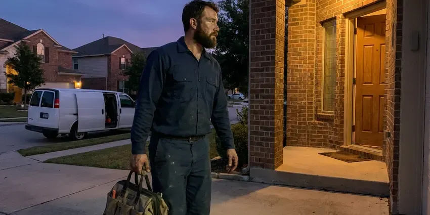

Clogged Drain Repair in Lansing, MI
Standing water in the tub or a sink that will not drain? We clear it fast in Lansing, MI and test it with running water.
- No Caustic Drain Cleaners
- Kitchen Sink, Bath and Laundry Lines
- Every Drain Tested Before We Leave
- Upfront Quotes

Same Drain Clogging Again in Lansing, MI?
If the clog keeps coming back, we put a camera down the line and show you why.
Local Drain Clearing for Lansing, MI Homes
CHV Plumbing runs a camera when a drain clogs twice in a month. There is always a cause. It might be a belly in the pipe that holds water, a broken fitting, heavy scale or a root that found a crack in an old joint, and seeing it on screen beats guessing at the next clog.
Some of what we do:
- Toilet clearing with a closet auger
- Laundry standpipe and drain line clearing
- Tub and shower hair removal without fixture damage

Additional Plumbing Maintenance Services in Lansing, MI
Our maintenance and specialty plumbing services in Lansing, MI catch small problems before they become emergencies.


Customers
Why Choose CHV Plumbing for Clogged Drain Repair in Lansing, MI?
Store-bought drain chemicals can soften ABS fittings and pit old cast iron. They often fail anyway. When they sit in a trap that is still blocked, they make the job more dangerous for whoever opens that trap next, including us, so we clear mechanically and leave the chemicals on the shelf.
- No Chemicals, Clogs get cleared mechanically, so your pipes are not exposed to lye or acid.
- Full-Length Clearing, We clear the whole line, not just the first few feet.
- Camera When Needed, Recurring clogs get a camera inspection so you see the cause.
Citywide Coverage
Kitchen, bath, laundry, garage, basement, every drain in the house is fair game. Small businesses as well. Our service area includes Lansing and nearby communities, and every job carries the same guarantee.
Experienced Team
Every tech is trained on drum machines, sectional cables and compact jetters. They go easy on old cast iron. They know how hard to push before a rusted line cracks, and how to protect thin trap arms, chrome finishes and porcelain while they work.
Safety-First Approach
Jetters run at high pressure. We respect that. Only trained techs run the jetter, and we keep people and pets well back from the cleanout while it is running.
Trusted Certified Lansing Plumbing Services Professionals
At CHV Plumbing, we are proud to offer certified plumbing services throughout Lansing, MI. Credentials matter in this trade. Every repair, install and maintenance visit follows strict safety and quality rules, and the plumbers doing the work carry recognized industry credentials.
Call Us Now PHCC Plumbing Contractor Recognition
PHCC Plumbing Contractor Recognition Better Business Bureau (BBB) Accreditation
Better Business Bureau (BBB) Accreditation Angi Certified Pro
Angi Certified Pro ISO 9001 Quality Management Certification
ISO 9001 Quality Management CertificationDrain Clogs We Clear All the Time in Lansing, MI
Toilet Clog Repair in Lansing
A toilet clog usually sits in the trapway, the S-shaped channel inside the bowl. Plungers often miss it. We use a closet auger with a rubber sleeve, so the cable clears the trapway and the bowl stays unmarked. We pull out a lot of wipes. If the auger finds nothing, the clog is past the toilet and we check the main.

Commercial Clogged Drain Repair in Lansing
Commercial drains take more abuse than any home drain. Kitchens are hardest on them. CHV Plumbing clears grease-heavy kitchen lines, floor sinks, mop sinks and restroom lines in offices, salons and retail spaces around Lansing, often before opening or after close so customers never notice. We can set up regular jetting.
Emergency Clog Removal in Lansing
An overflowing toilet during a holiday dinner does not wait for business hours. We answer after hours. CHV Plumbing sends a technician in Lansing with cables, augers and a jetter so one visit handles it. Rates for after-hours calls are quoted before we come.
Recurring Drain Clogs and Camera Diagnosis in Lansing, MI
The same drain clogging every few weeks is a pipe problem, not bad luck. Something is catching debris. We run a small inspection camera through the line, letting you see any sag, crack or heavy scale on the screen. Then you decide. A deeper cleaning, a spot repair or a new section are the usual options.
Laundry and Utility Drain Clogs in Lansing, MI
A washing machine dumps up to 20 gallons in a couple of minutes. Lint rides along with it. Over months that lint packs the standpipe and the branch line behind it, so the first sign is often water spilling out of the standpipe mid-cycle. We cable it and suggest a lint trap. Some laundry lines share the kitchen branch, so we check both.
Kitchen Sink Clog Repair in Lansing
Kitchen sinks clog from grease that cools and hardens on the pipe wall. Food and soap stick to it. We pull the trap, send a cable through the wall line all the way to the stack, and check the disposal for a jam or worn impeller. A heavy grease line may need a quick jet afterward.
Main Sewer Line Clog Clearing in Lansing, MI
Several drains backing up at once usually means the clog is in the main. That is a bigger job. We find the cleanout, relieve the pressure slowly and then run a large cable with a cutting head. We camera the line once it flows.

Emergency Drain Clog Service in Lansing, MI
Some backups cannot wait for Monday. Sewage on the floor is one. CHV Plumbing answers after hours in Lansing, MI and sends a tech with full drain equipment, so the clog gets cleared on the first visit instead of patched until a second truck arrives. Turn the toilet supply valve off while you wait.
Local Clogged Drain Repair in Lansing, MI
Close by matters on a drain call. Backups do not wait. CHV Plumbing runs vans across Lansing, MI loaded with drum machines, cables and a jetter, so one visit is usually enough.
People in Lansing call us for the same handful of drains: kitchen, tub, laundry, floor drain. It is daily work for us. Each call starts with a few questions about which fixtures are slow, since that tells us where the clog is likely to be.
CHV Plumbing at a Glance
- Licensed and insured plumbers serving Lansing, MI
- Same-day appointments and 24/7 emergency response
- Clear written estimates, no hidden fees
- 4.9-star rated by 670+ Michigan customers
Lansing Map
Lansing Information
- Population
- 112,115
- Area codes
- 517/989/269
- Service area
- Lansing and communities within 40 miles
- Nearby
- East Lansing, Jackson, Battle Creek, Flint
Many homes in Michigan were built before the 1970s and still have galvanized supply lines and cast iron drains. Older drain lines in Lansing pick up scale and the occasional root, so a plunger only moves the clog a few feet.
Talk to a Plumber
Reach out to CHV Plumbing for reliable plumbing work done by licensed pros in Lansing, MI.
Our Specialized Plumbing Services in Lansing, MI
At CHV Plumbing, we handle the full list of plumbing services across Lansing, MI. From leak detection to full system installs, our team works fast and charges fair prices on homes and commercial properties alike. Explore our core services below:


What to Expect When We Clear a Drain in Lansing, MI
Expect a few questions, a price, the clearing and a water test before we leave.
Book a Visit
Call (810) 380-5918 and we will set an arrival window. Same-day slots are often open.
Look and Diagnose
The plumber checks the fixtures, asks a few questions and decides where to go in.
Clear the Line
We cable or jet the drain the full length so the clog does not come right back.
Frequently Asked Questions About Clogged Drain Repair in Lansing
A standard clog in one fixture usually runs $150 to $500. Location matters a lot. Main line clogs that need a camera inspection or hydro jetting often land between $400 and $1,000 depending on the line. You get a clear price after we look at it.
Call once the plunger has failed. Plunging harder seldom works. Other signs it is time are more than one drain backing up, water showing up in a fixture you did not use and the same drain clogging every few weeks. Those usually point past the trap.
Not really. Some cause real harm. Caustic cleaners can soften ABS fittings, corrode older metal pipe and sit in the trap if they fail, creating a burn hazard for anyone who opens that trap afterward, including you. Mechanical clearing is safer.
Clearing a clog does not need a permit. It is just maintenance. A permit may be needed if the fix turns into replacing pipe, digging up part of the sewer line or changing the layout of the drain system in the house. We tell you in advance if that applies in Lansing.
Yes, in the main sewer line. Not in sinks. Roots find small cracks or loose joints in older clay and cast iron pipe, grow inside where the water and nutrients are, and form a mat that catches everything flowing past. Established Lansing neighborhoods with big trees see it often.
Water that drains slowly or not at all. Gurgling from the pipes. A sour smell from the drain, standing water in the shower and a sink that bubbles when the toilet flushes are all common clues. One slow drain is a local clog.
Sometimes, yes. A plunger works on many clogs. A hand-held hair snake can clear a lot of tub and sink clogs, though repeat clogs or multiple slow drains need a pro. Forcing a cable can crack old pipe.
Yes, evenings and weekends too. We answer after hours. When you call, you hear the arrival time and any after-hours rate. Most weekend calls get same-day service.
Hear From Customers Who Hired Our Plumbing Experts

Megan L.
Our upstairs tub drained so slowly that every shower turned into a bath. CHV Plumbing pulled a wad of hair out of the stopper and then snaked the line past the trap. Three months later it still drains fast.
Drain Cleaning · Flint, MI
Daniel K.
A pipe burst in the garage ceiling at 11 at night. Someone answered on the second ring, and the plumber was in my driveway about fifty minutes later. He shut off the main, cut out the split section, and had water back on before 2 am.
Emergency Plumbing · Lansing, MI
Angela D.
Our sump pump quit during a storm and the water was an inch from the basement carpet. CHV Plumbing put in a new pump with a battery backup that same evening. We have had two heavy rains since. It kicked on both times.
Sump Pump · Jackson, MI
Monica A.
Our water bill nearly doubled in one month with no change in how we used water. The tech checked the meter, heard the leak under the hallway with his equipment, and opened a hole about a foot square. Fixed the same day.
Slab Leak Repair · East Lansing, MI
Paul B.
Our pit pump ran nonstop even in dry weather. The plumber found the check valve was stuck open, so the same water kept cycling back into the pit. New valve, new float switch, done in an hour. It runs quiet now.
Sump Pump · South Lyon, MIJessica T.
We were adding a gas range in a kitchen remodel and needed a new line run from the meter. The plumber pulled the permit, ran the pipe through the crawl space, and had it inspected and approved within the week.
Gas Line Repair · Battle Creek, MI